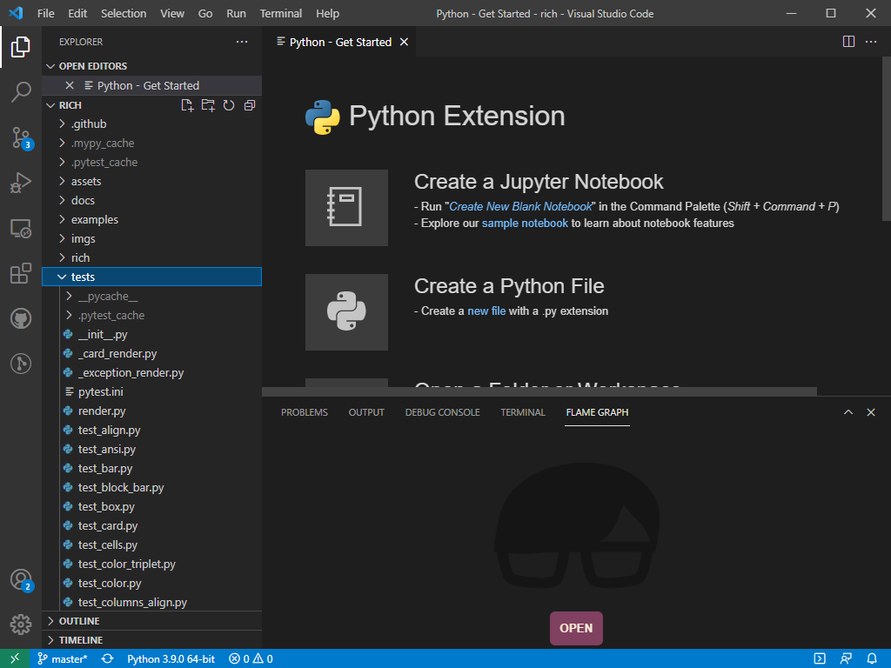
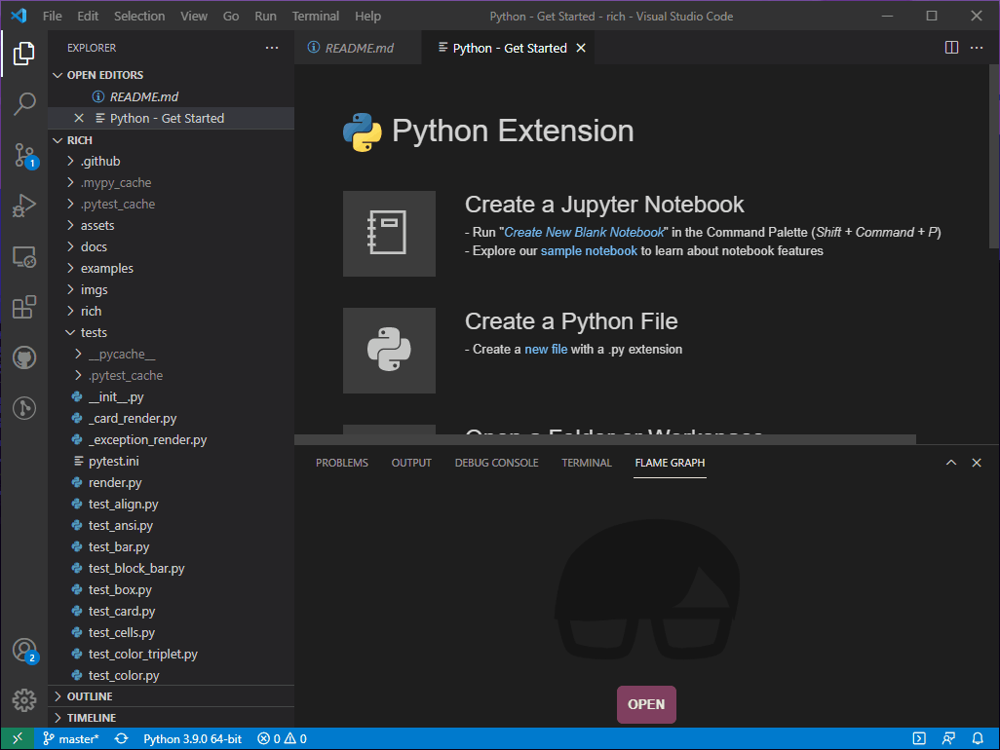
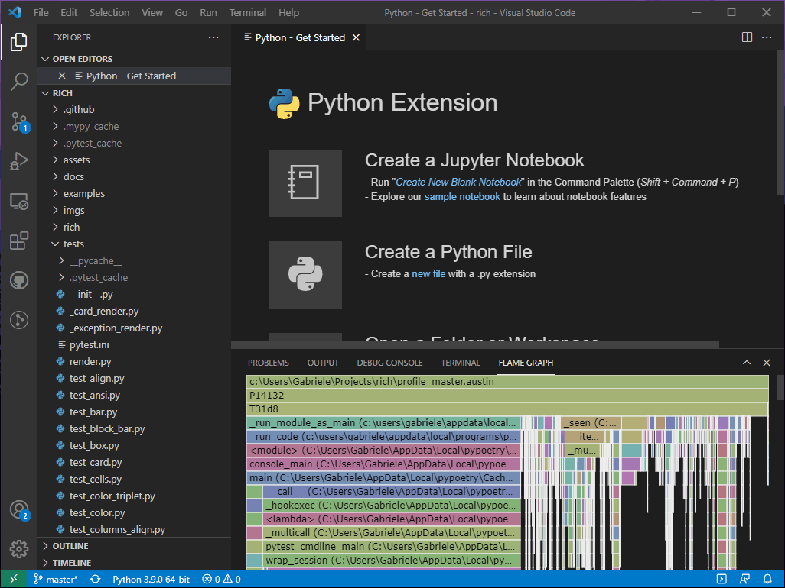
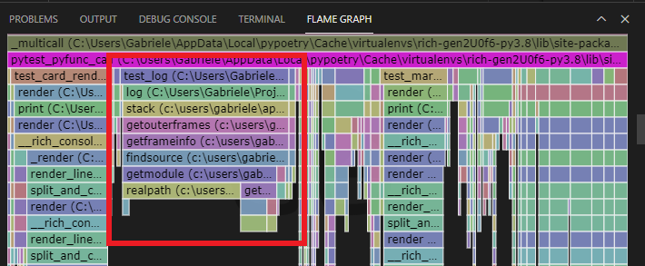
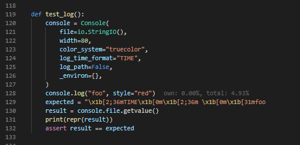
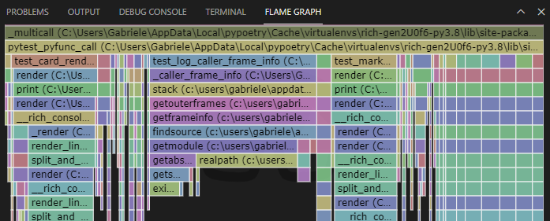

In my experience as a software engineer, I think it's still way to common to see production-ready code being shipped without having been profiled at least once. With the current computing power and the ever increasing number of available cores per machine, it feels like a lot of preference is generally given to readable and maintainable code at the cost of those extra microseconds. Whilst this might make sense for extremely complex code-bases in low-level languages, this is perhaps more of an issue with technologies like Python, where in general you can still make some substantial optimisations while still retaining readability and maintainability.
To further prove to myself that profiling is still an important step in the development process that gets overlooked, I did the following experiment. I grabbed a Python project at random, the first one that popped up on my GitHub feed, looked at its test suite and profiled the test runs. The day I did this, Rich was sitting at the top of my GitHub feed, so what follows is a trace-back of the steps that led me to contribute this performance PR to the project. Besides Python, the other tools that I have used are Austin 3 and VS Code with the Austin extension installed.
So first of all, let's make sure that our test environment is fully set up. If you want to follow along, make sure that you have Austin and VS Code installed. I was using Windows the day I made this experiment, so I had Austin installed with choco, and the VS Code extension installed from the Visual Studio Marketplace. Let's get our hands on some code now by cloning Rich and checking out that commit that was master for me at that time. Open up a terminal and type
git clone https://github.com/willmcgugan/rich.git
git checkout ce4f18c
The project uses poetry so running the test suite is as easy as invoking
poetry install
poetry run python -m pytest
Once we are sure that all the tests pass we are ready to start getting some
profiling data to see what's actually running. Version 3 of Austin comes with a
reworked sleepless mode that can be used to get an estimate of CPU time
instead of wall time. One big advantage of using a tool like Austin is that we
do not have to make any changes to the code in order to get profiling data out
of it. Besides, Austin runs out-of-process, which means that it won't have any
effects on the code. Getting profiling data is as easy as invoking Austin just
before the test run
poetry run austin -so profile_master.austin python -m pytest -vv tests
WARNING Here we can let Austin sample the whole
pytestrun because we have checked beforehand that it only takes a few seconds to complete. DO NOT try the same exact thing with long-running test suites or you would end up with a massive sample file that would be hard to process. In such cases you can either select a few tests, or run Austin with the-x,--exposureoption to limit sampling to just a few seconds, and adjust the sampling interval with the-i\--intervaloption as best suited.
The -s option turns the sleepless mode on, which gives us only the on-CPU
samples, whereas the -o option specifies the output file. Once the test run
terminates, our profiling data will be in profile_master.austin, ready to be
analysed with the Austin VS Code extension. We get the best experience if we
start VS Code from within the project's root directory as this allows us to
browse the code while we look at the flame graph. So fire up VS Code from the
terminal with
code .
and activate the Austin extension by clicking on the FLAME GRAPH tab in the
bottom panel. Sometimes you would have to right click inside the panel and click
the menu entry to fully activate the extension.

At this point we are ready to load the profiling data that we have collected.
Click on the OPEN button or press CTRL + SHIFT +
A to bring up the open dialog and select profile_master.austin. The
Austin VS Code extension will analyse all the collected sample and generate the
flame graph.

The picture we get is certainly overwhelming at first, especially for those that
are not familiar with how pytest works internally. This is perhaps a nice way
to actually find out how pytest collects and run tests. By poking around we
discover that some of the test runs are under the pytest_pyfunc_call frame. If
you are struggling to find it, press F inside the flame graph to
reveal the search input box, type pytest_pyfunc_call and hit ENTER.
The frames that match the search string will be highlighted in purple. Let's
scroll until we find the largest one. When we click on it, it will expand to the
full width of the panel to give us a better idea of what lies underneath it, and
the corresponding portion of the source code will also appear in VS Code!

We now have a better view of the tests that are being executed under this path. At this point we can start looking for the largest leaf frames and see if we can make any sense of them. When I first looked at this graph, one thing that quickly caught my eye was this particular stack.

Clicking on the test_log frame reveals the test code in VS Code. Surprisingly,
the test has just a single call to Console.log, and the percent timing
annotation generated by the Austin extension tell us that, of the whole on-CPU
time for the test suite, about 4.9% is spent on that single call!

Looking back at the flame graph, we realise that all the time in the log frame
is spent calling stack. Clicking on the log frame reveals the source code
for the Console.log method and we can inspect how the information from the
stack is used to generate the log entry. The line we are interested in is 1685,
where we have
caller = inspect.stack()[_stack_offset]
So inspect.stack() is called, which according to the flame graph does a lot of
resolutions for each frame (see those calls to findsource, getmodule
etc...), none of which seems to be used in Console.log, and besides we just
pick one of the frames close to the top of the stack and chuck the rest away.
That's pretty expensive for a simple log call. Since I had some familiarity with
the inspect module with my
work on Austin and other stuff, I knew there is (at least for CPython) the lower
level method
currentframe
that would give you essential information about the currently executing frame.
From there you can navigate down the stack and stop at the frame of interest. In
this case we just need to take the parent frame of the current one, and we
already find all the information needed by the Console.log method. I made the
changes as part of the already mentioned PR
#1253, so if you check that
code out and re-run the tests with
poetry run austin -so profile_pr.austin python -m pytest -vv tests
and open the new profiling data in profile_pr.austin you will see that the
test case test_log has pretty much disappeared as it basically takes almost
zero CPU time now.

Instead we see test_log_caller_frame_info, which is the test case for the
compatibility utility for those Python implementations that do not implement
currentframe. But with CPython, calling Console.log is now inexpensive
compared to the original implementation.
See how easy it's been to find a performance issue. With the right tool we didn't have to add any instrumentation to the code, especially in one we probably had no familiarity with. In many cases you only understand your code truly if you see it in action. So no more excuses for not profiling your code before you ship it! ;P